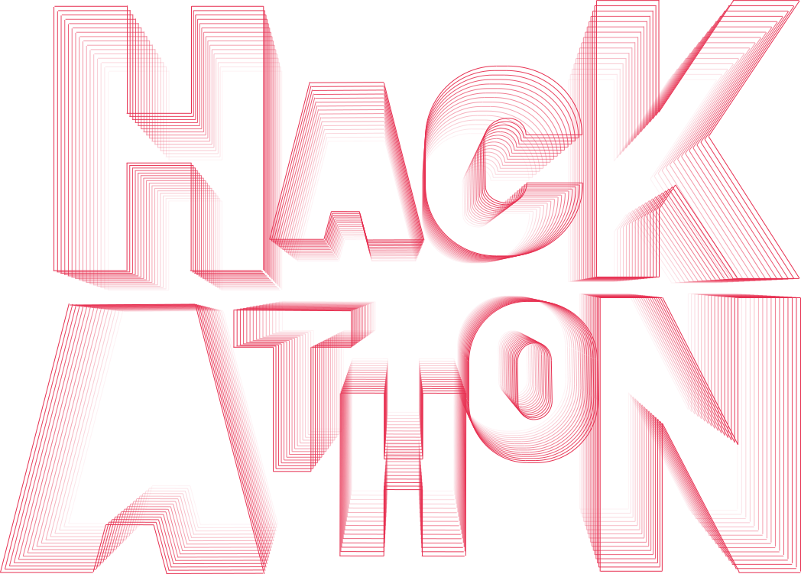
O que é o Be.IT?
O Be.IT é um Hackathon que irá decorrer nos dias 25, 26 e 27 de novembro, uma competição que não vais querer perder!
Na sexta-feira, dia 25 vais melhorar as tuas communication skills e aprender a fazer o teu próprio pitch.
Agora que tens as ferramentas para dar um pitch até no Shark Tank, vais entrar na The Loop Co. e passares o melhor fim de semana possível, recheado de pessoas inteligentes e motivadas como tu!
Estão à tua espera ainda sessões de networking, coffee breaks e atividades fun que preparámos para ti!
E não te preocupes com comida, pois temos as melhores refeições para te receber.
Junta-te já com mais 3 amigos e vem desafiar as tuas capacidades, trabalho em equipa e ainda podes ganhar um grande prémio final!
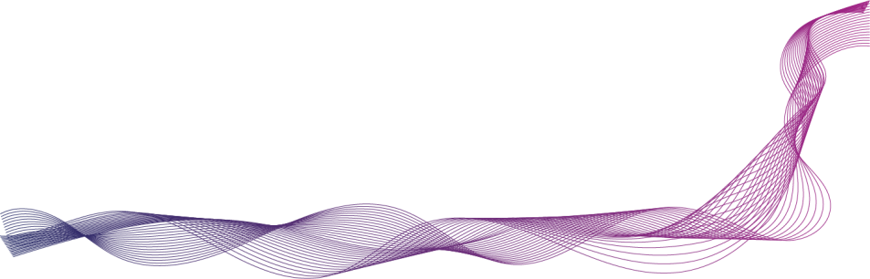
Inscrições
Tens até dia 18 de novembro para proceder à inscrição da tua equipa.
Junta-te com mais 3 amigos e vem fazer parte do melhor Hackathon do ano, num conceito nunca antes visto em Coimbra!!
Se não conseguiste desafiar mais 3 amigos, inscreve-te individualmente, que nós arranjamos uma equipa para ti!!
Caso só consigas convencer 1 ou 2 amigos devem inscrever-se individualmente e deixar em nota que querem participar juntos.
Quando criarmos as equipas iremos juntar-vos e alocar os elementos necessários para que a equipa fique completa.
Workshop de Pitch - Accenture
O Workshop de Pitch vai ser dado pela Accenture na sexta-feira, dia 25.
Vai decorrer no Departamento de Engenharia Informática localizado no Polo II.
Aqui vais aprimorar as tuas capacidades de comunicação sentindo-te assim mais capaz para apresentares o teu projeto ao público!
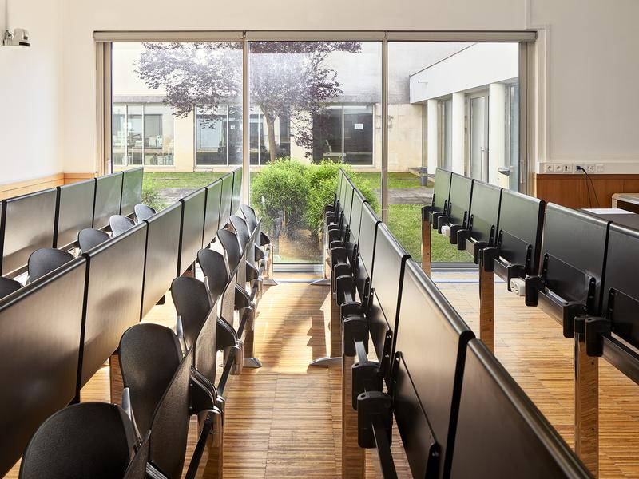
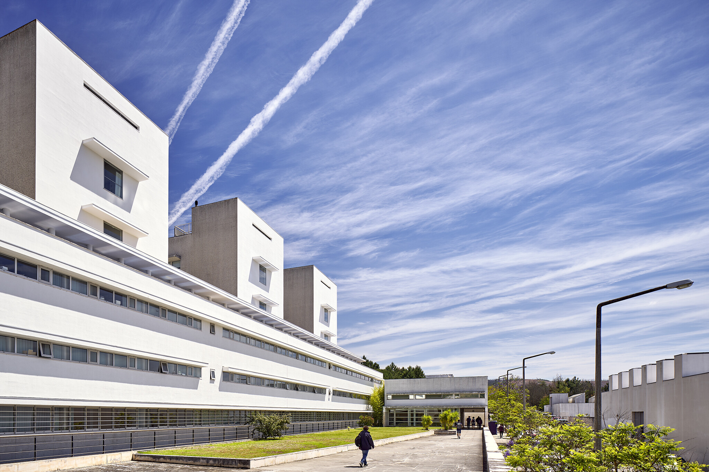
Hackathon - The Loop Co.
O Hackaton do Be.IT vai-se realizar no dia 26 e 27 de novembro nos escritórios da The Loop.Co, na praça do comércio, em Coimbra!
A competição tem duração de 16 horas nas quais terás que desenvolver um projeto inserido num tópico.
Depois do projeto estar finalizado terás de fazer um pitch a um painel de júris da The Loop.Co!
Caso o teu projeto se destaque irás ganhar um dos nossos prémios!
Terás uma equipa de técnicos da empresa e também da nossa equipa que te poderão ajudar no que precises!
Temos também atividades organizadas para ti para que esta competição se torne ainda mais divertida!
Contamos contigo?
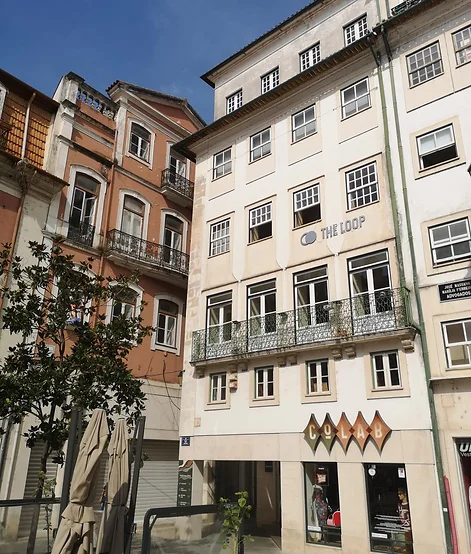
Patrocínios
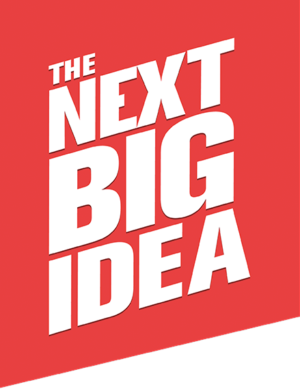
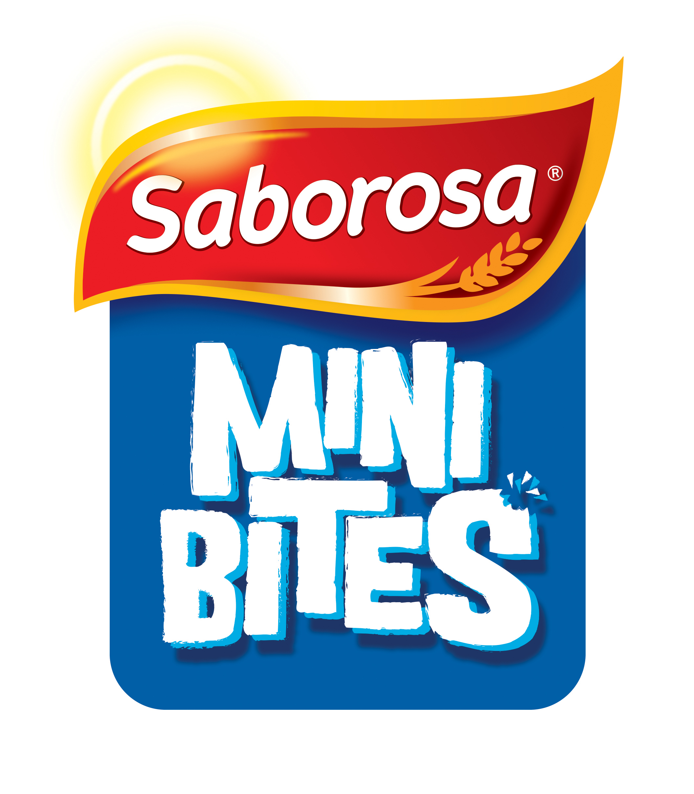
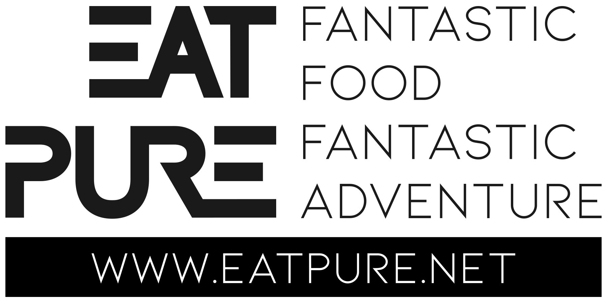
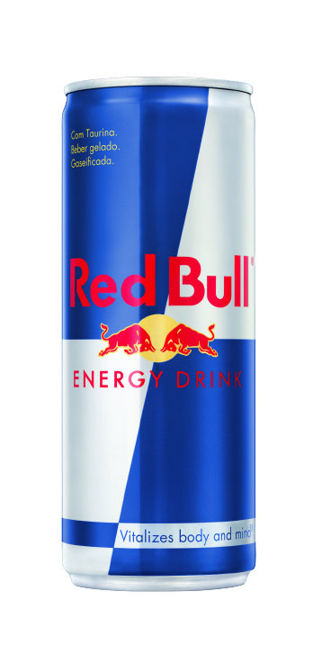
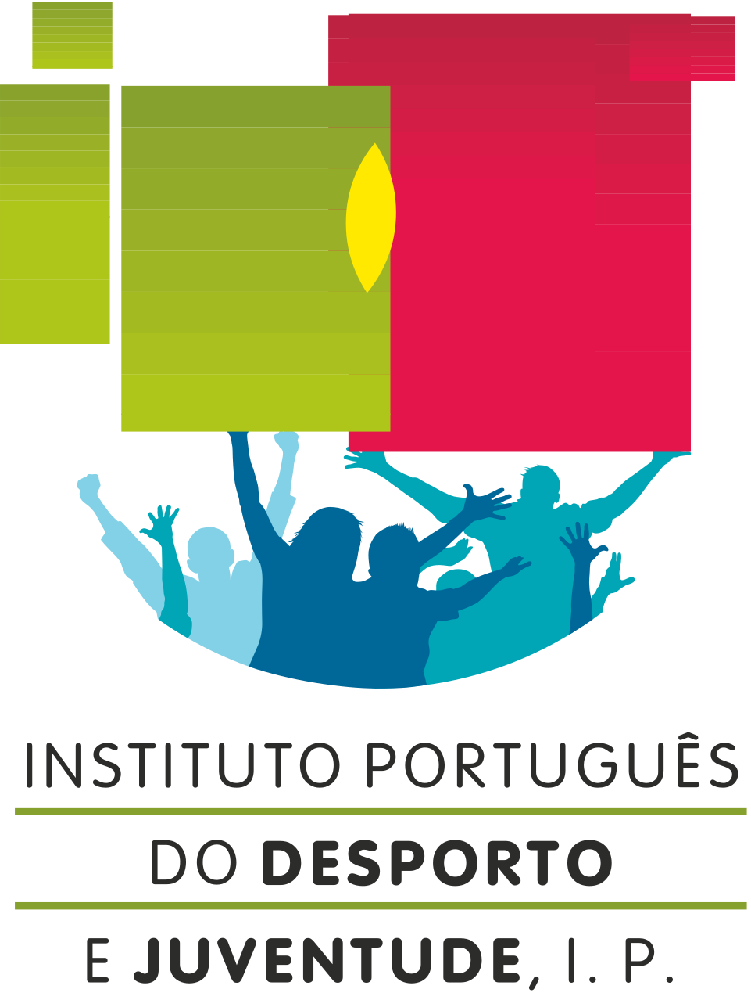
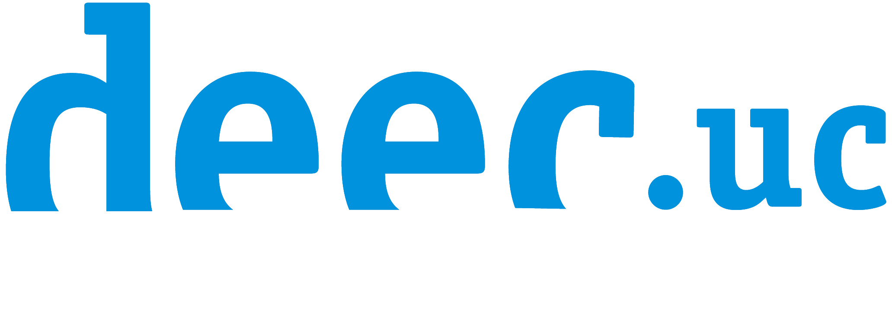
Prémios
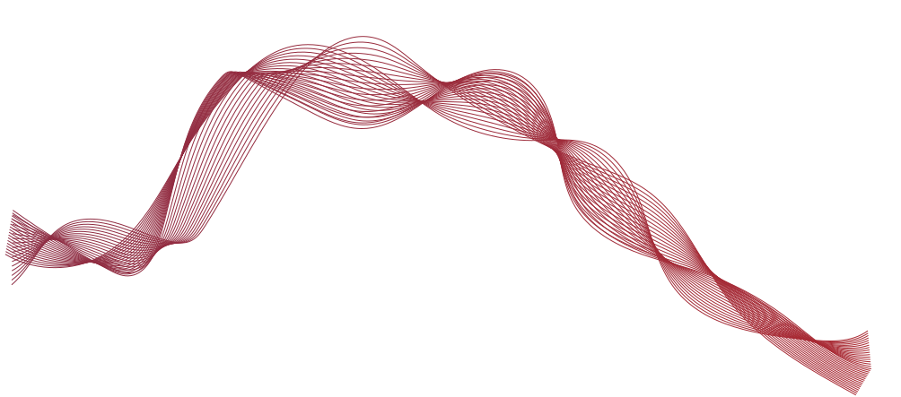
Novidades em breve!
FAQ
Quem pode participar?
Pode participar qualquer aluno da FCTUC inscrito no ano letivo de 2022/2023. Só precisas de ter vontade de programar e criatividade para apresentares soluções relativas ao tópico proposto.
Onde irei dormir?
Será uma noite bem diferente… já alguma vez te imaginaste a dormir numa empresa!? No Be.IT tudo acontece!! Como tal, prepara-te para uma boa maratona a programar nos escritórios da The Loop Co.
O que é necessário para o evento?
Deves levar os teus produtos de higiene, saco de cama e o teu peluche. Não tens de te preocupar com as refeições, serão todas oferecidas pela organização do evento
A inscrição terá algum custo?
Quando te inscreveres, tu e a tua equipa terão de pagar uma caução no valor de 20 euros( 5 euros cada). Caso cumpram com todos os pontos previstos no regulamento do Be.IT, a caução será devolvida no final do evento.
Onde posso encontrar o regulamento do Be.IT?
Podes encontrar o regulamento do Be.IT nas redes sociais do BEST Coimbra.
Equipa Organizadora
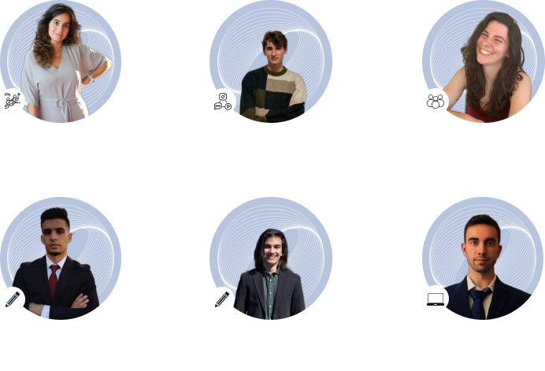
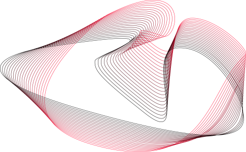